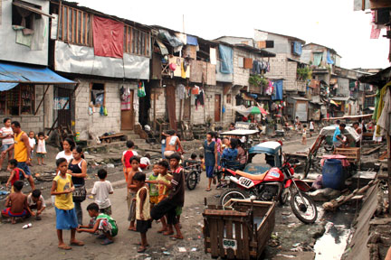
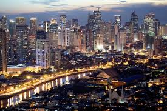
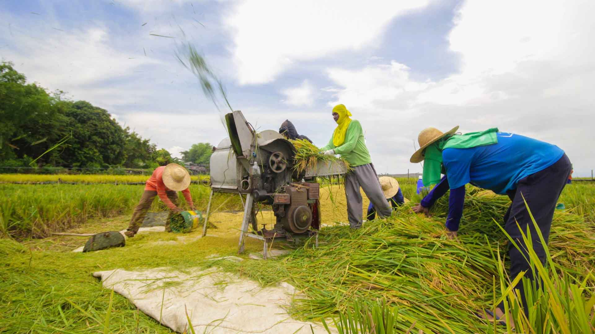
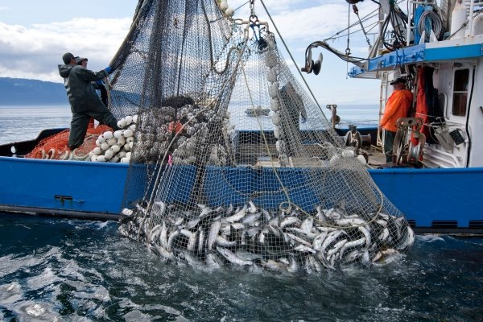
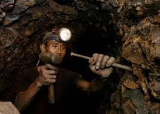
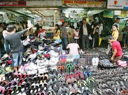
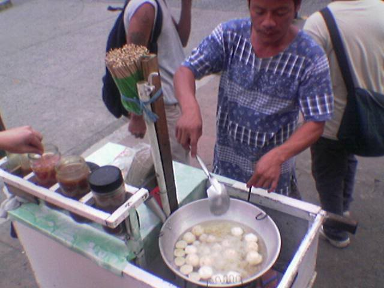
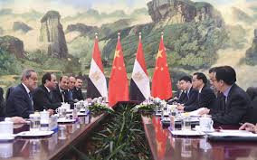
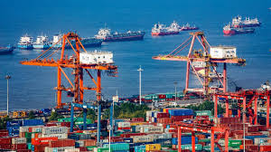

PAMBANSANG KAUNLARAN
PAMBANSANG KAUNLARAN - Isang estado ng bansa kung saan tinatamasa ng mga tao mula sa pinakamababang uri ng mamamayan ang nakakamanghang pagbabago sa ekonomiya at pamumuhay
• Pagbabago
•Pag-unlad
• Pagsulong
• Ebolusyon
Pagbabago
- Paraan upang maging iba o naiiba.
Proseso ng pag-iiba o pagkakaroon ng kaibahan sa lipunan at ekonomiya.
Pag-unlad
- Pagbabago mula sa mababa tungo sa mataas na antas ng pamumuhay. (Merriam-Webster)
Pag-angat, pagsulong, o paglago sa pangkalahatang aspeto ng pamumuhay. (Bon & Bon 2015)
Isang progresibo at aktibong proseso at ang pagsulong ay produkto nito (Fajardo 1994)
Ang kaunlaran ay matatamo lamang kung mapauunlad ang yaman ng buhay ng mga tao kaysa sa yaman ng ekonomiya nito (Sen 2008)
- Ito ay hindi lang tungkol sa pera ng bansa, kundi sa kalidad ng buhay ng mga tao. (Sikat, 1983)
Tradisyonal - Binibigyang-diin ang pag-unlad bilang pagtatamo ng patuloy na pagtaas ng antas ng income per Capita nang sa gayon ay mabilis na maparami ng bansa ang kaniyang output kaysa sa bilis ng paglaki ng populasyon nito.
Makabago - Isinasaad na ang pag-unlad ay dapat na kumakatawan sa malawakang pagbabago sa buong sistemang panlipunan.
Pagsulong - Pag-usad tungo sa iyong layunin o goal
Pagpapaunlad ng kakayahan, kaalaman, at abilidad upang makasabay sa agos ng buhay
MGA SALIK NA MAAARING MAKATULONG SA PAGSULONG NG EKONOMIYA (Sally Meek, John Morton at Mark Schug, 2008)
Likas na yaman - Malaki ang naitutulong ng likas na yaman sa Pagsulong ng ekonomiya lalong-lalo na ang mga yamang lupa, tubig, kagubatan, at mineral.
Subalit hindi kasiguraduhan ang mga likas na yaman sa mabilis na pagsulong ng isang bansa.
Yamang-tao - Isang mahalagang salik na tinitignan sa pagsulong ng ekonomiya ang likas-paggawa. Mas maraming output ang nalilikha sa isang bansa kung maalam at may kakayahan ang mga manggagawa nito.
Kapital - Sa tulong ng mga kapital tulad ng mga makita sa mga pagawaan at nakakalikha ng maraming produkto at serbisyo.
Teknolohiya at Inobasyon - Nagagamit nang mas episyente ang iba pang mga pinagkukunang yaman upang mas maparami pa ang mga nalilikhang produkto at serbisyo.
- Makatwiran at dinamikong kaayusan ng panlipunan
- Kasaganaan at kasarinlan
- Kalayaan sa kahirapan, hanapbuhay para sa lahat, umaangat na istandard ng pamumuhay, at mainam na uri ng buhay para sa lahat
- Sapat na mga lingkurang panlipunan
- Katarungang panlipunan
SUKATAN NG KAUNLARAN NG BANSA AYON SA UNITED NATIONS
Maliban sa paggamit ng GDP at GNP, ginagamit ang Human Development Index (HDI) bilang isa sa mga panukat sa antas ng pag-unlad ng isang bansa.
Ang Human Development Index (HDI) ay tinutukoy sa pangkalahatang sukat ng kakayahan ng isang bansa na matugunan ang mahahalagang aspekto ng kaunlarang pantao.
Kabilang dito ang kalusugan, edukasyon, at antas ng pamumuhay.
ANTAS NG KAUNLARAN NG BANSA
- Maunlad na Bansa o Developed Economies
Mga bansang may mataas na GDP, income per capita, at mataas na HDI.
- Umuunlad na Bansa o Developing Economies
Mga bansang may mga industriyang kasalukuyang pinauunlad ngunit wala pang mataas na antas ng industriyalisasyon.
Hindi pantay ang GDP at HDI
- Papaunlad na Bansa o Underdeveloped Economies
Mga bansang kung ihahambing sa iba ay kulang sa industriyalisasyon.
Mababang antas ng agrikultura at mababang GDP, income per capita, at HDI.
MGA GAMPANIN NG MAMAMAYAN SA PAG-UNLAD NG BANSA
Mapanagutan
- Tamang pagbabayad ng buwis
- Makialam
Maabilidad
- Bumuo o sumali sa kooperatiba
- Pagnenegosyo
Maalam
- Tamang pagboto
- Pagpapatupad at pakikilahok sa mga proyektong pangkaunlaran sa komunidad
Makabansa
- Pakikilahok sa pamamahala ng bansa (participative governance)
- Pagtangkilik sa mga produktong Pilipino


Agrikultura
AGRIKULTURA -
Isang agham at sining na may kinalaman sa pagpaparami ng mga hayop at mga tanim o halaman.
Ito ay may kaugnayan sa lahat ng gawain na sangkot ang mga hayop at halaman
Ager=Lupa; Cultura=Paglilinang
Pagsasaka
Pangingisda
Paghahayupan
Paggugubat/Pagtotroso
GAMPANIN NG PAGSASAKA
Pangunahing pananim: palay, mais, niyog, tubo, saging, pinya, atbp. na karaniwang kinokonsumo sa loob at labas ng bansa.
Tinatayang umabot ng ₱797.731 bilyon ang kita mula sa pagsasaka
GAMPANIN NG PANGINGISDA
Nauuri sa tatlo: komersiyal, munisipal, at aquaculture
Bahagi din nito ay ang panghuhuli ng hipon, sugpo
GAMPANIN NG PAGHAHAYUPAN
May kinalaman sa mga hayop na itinaas para sa karne, hibla, gatas, itlog, atbp.
Kasama rito ang pang-araw-araw na pangangalaga, pumipili ng pag-aanak at pagpapalaki ng mga hayop
GAMPANIN NG PAGGUGUBAT
Patuloy na nililinang ang ating mga kagubatan bagamat tayo ay nahaharap sa suliranin ng pagkaubos ng mga yaman nito.
Pinagkukunan ng: plywood, tabla, troso, at veneer
Pinagkakakitaan din ang rattan, nipa, anahaw, kawayan, atbp.
- Pinagmumulan ng pagkain
- Pinagkukunan ng hilaw na materyales upang makabuo ng panibagong produkto
- Nagkakaloob ng trabaho sa maraming Pilipino
- Nagpapasok ng dolyar sa ating bansa
- Pinagkukunan ng sobrang manggagawa patungo sa ibang sektor ng ekonomiya
SULIRANIN NG AGRIKULTURA
Pagsasaka
- Pagliit ng lupang sakahan
- Paggamit ng makabagong teknolohiya
- Kakulangan ng mga pasilidad at imprastraktura sa kabukiran
- Kakulangan ng suporta mula sa iba pang sektor
- Pagbibigay prayoridad sa sektor ng industriya, pagdagsa ng dayuhang kalakal
- Climate Change
Pangingisda
- Mapanirang operasyon ng malalaking komersiyal na mangingisda
- Epekto ng polusyon sa pangisdaan
- Lumalaking populasyon ng bansa
- Kahirapan sa hanay ng mga mangingisda
Paghahayupan
- Pagkakaroon ng mga peste sa alagang hayop tulad ng baboy at manok
Paggugubat
- Mabilis na pagkaubos ng mga likas na yaman
MGA PATAKARAN AT PROGRAMA HINGGIL SA PAGPAPAUNLAD SA SEKTOR NG AGRIKULTURA
PANAHON NA HINDI PA NASASAKOP ANG PILIPINAS
Ang mga sinaunang Pilipino ay nakakapag-may-ari ng lupa sa pamamagitan ng pagiging unang nagtayo ng bahay.
Wala pang titulo/rights noon.
Ang pinagbabasehan lamang ay salita ng bawat isa.
PANAHON NG KASTILA
Encomienda System:
Encomienda - lupang gantimpala sa matapat na naglilingkod sa hari ng Espanya at mga taong tumulong sa pananakop sa Pilipinas.
PANAHON NG AMERIKANO
Binili ng Amerika ang 160,000 hectares ng lupa mula sa mga prayle para sa mga magsasaka.
Land Registration Act ng 1902:
Nagkaroon ng mga titulo dahil dito.
Ito ay sistemang Torrens, kung saan ang mga titulo ng lupa ay ipinatalang lahat.
Public Land Act ng 1902:
Pamamahagi ng mga lupaing pampubliko sa mga pamilya na nagbubungkal ng lupa
PANAHON NG KASARINLAN
Batas Republika Blg. 1160:
Nagtatag sa National Resettlement and Rehabilitation Administration (NARRA)
Batas Republika Blg. 1190 ng 1954:
Bilang proteksyon laban sa mapang-abuso na may-ari ng lupa sa mga manggagawa.
Ito ay laban sa mga Absentee Landlord
Agricultural Land Reform Code of 1963:
Nagpalaya sa mabigat na trabaho ng magsasaka mula sa kanilang pagkaalipin sa utang at kahirapan.
Nilagdaan ni Diosdado Macapagal noong Agosto 8, 1963
Atas ng Pangulo Blg. 2 ng 1972:
Isailalim sa reporma sa lupa ang buong Pilipinas noong panahon ni Pangulong Marcos.
Atas ng Pangulo Blg. 27:
Bibilhin ng pamahalaan ang mga lupang sakahan na taniman ng palay/mais na lampas sa 7 ektaryang limitasyon at ipamamahagi ito sa mga magsasakang walang lupa.
Batas Republika Blg. 6657 ng 1988:
“Comprehensive Agrarian Reform Law (CARL)” na inaprubahan ni Corazon Aquino noong Hunyo 10, 1988.
Kabilang dito ang lahat ng publiko at pribadong lupang agrikultural at nakapaloob sa Comprehensive Agrarian Reform Program (CARP).
Ipinamamahagi ang lahat ng lupang agrikultural anuman ang tanim nito sa mga walang lupang magsasaka.
Matatapos sana sa 10 taon ngunit ginagawa pa rin ang batas hanggang ngayon.
MGA NAISAKATUPARAN UPANG MAIANGAT ANG KALAGAYANG PANGKABUHAYAN NG MGA MAGSASAKA (CARP, 2003)
Pagtatayo ng bahay-ugnayan (bagsakan) para sa mga magsasaka upang masigurong mayroon suportang maibigay sa kanila.
Pagtatayo ng gulayan para sa mga magsasaka.
Pagsisiguro na ang mga anak ng mga magsasaka ay makapag-aral kaya itinayo ang Pangulong Diosdado Macapagal Agrarian Reform Scholarship Program.
Kalahi agrarian reform zones.
Hindi sakop ng CARP ang:
Liwasan at parke
Mga gubat at reforestation area
Mga palaisdaan
Tanggulang pambansa
Paaralan
Simbahan
Sementeryo
Templyo
Watershed, atbp.
PANGINGISDA
> Pagtatayo ng mga daungan
>Philippine Fisheries Code of 1998:
Paglilimita ng pamahalaan at naglalayon ng wastong paggamit sa yamang pangisdaan.
> Fishery Research:
Isang programa ng pamahalaan na isinasagawa upang masiguro ang pagpaparami at pagpapayaman sa mga yamang-tubig
PAGTOTROSO
> Community Livelihood Assistance Program (CLASP):
Paglilipat ng teknolohiya/pagtuturo sa mga mamamayan ng wastong paglinang sa mga likas na yaman.
> National Integrated Protected Areas System (NIPAS):
Maingatan at protektahan ang kagubatan
> Sustainable Forest Management Strategy:
Upang matakdaan ang permanente at sukat ng kagubatan
LANDBANK OF THE PHILIPPINES
> Upang magkaroon ng kaagapay ang mga magsasaka sa pagpapaunlad ng kanilang kabuhayan.
Department of Agriculture (DA):
Gumagabay sa mga magsasaka ukol sa makabagong teknolohiya at wastong paraan ng pagtatanim.
Bureau of Fisheries and Aquatic Resources (BFAR):
Sinisikap na paunlarin ang larangan ng pangingisda.
Bureau of Animal Industry (BAI):
Nangangasiwa sa larangan ng paghahayupan.
Ecosystem Research and Development Bureau (ERDB):
Nagsasagawa ng pananaliksik sa ecosystem upang magbigay ng siyentipikong batayan sa pangangalaga ng kapaligiran at yamang gubat.


INDUSTRIYA
INDUSTRIYA-
Tumutukoy sa pagproseso ng mga hilaw na materyal at paggawa ng mga produkto na kinakailangan para sa pampublikong pamilihan.
Naglalayong maiproseso ang mga hilaw na materyal upang makabuo ng produkto na ginagamit ng tao.
Pagmimina (Mining)
Pagmamanupaktura (Manufacturing)
Konstruksyon (Construction)
Utilities
Pagmimina
Pagkuha at pagproseso ng mga yamang mineral (metal, di-metal, o enerhiya) upang gawing tapos na produkto o kabahagi ng isang yaring kalakal.
Ang mismong produkto, hilaw man o naproseso ay nagbibigay ng kita para sa bansa.
Pagmamanupaktura
Paggawa ng mga produkto sa pamamagitan ng manual labor o ng mga makina.
Nagkakaroon ng pisikal o kemikal na transpormasyon ang mga materyal o bahagi nito sa pagbuo ng mga bagong produkto.
Konstruksyon
Pagtatayo ng mga gusali, estruktura, at iba pang land improvements.
Utilities
Pagtugon ng mga pangunahing pangangailangan ng mga mamamayan tulad ng tubig, kuryente, at gas,.
Paglalatag ng mga imprastraktura at angkop na teknolohiya upang maihatid ang serbisyo.
-Tumatanggap ng mga produkto mula sa sektor ng agrikultura at ng serbisyo mula sa sektor ng paglilingkod.
-Nagkakaloob ng hanapbuhay sa maraming Pilipino.
-Nagpapasok ng dolyar sa bansa.
-Nakagagamit ng makabagong Teknolohiya.
-Gumagawa ng mga intermediate products (mga materyales o produkto na ginagamit sa paggawa ng iba pang produkto; hal. wheat - to make bread)
PAGKAKAUGNAY NG AGRIKULTURA AT INDUSTRIYA
-Nagmumula sa agrikultura ang mga hilaw na sangkap na ginagamit sa pagbuo ng mga produkto ng industriya.
-Ang mga ginagamit na traktora, sasakyang pangingisda, at iba pang produkto ay mula sa industriya na ginagamit ng mga magsasaka upang magkaroon ng mataas na produksyon na magbibigay ng malaking kita sa sektor ng agrikultura.
-Ang dami ng lakas-paggawa sa mga mamimili ay nagpapakita ng lubos na pagtutulungan sa mga sector ng industriya at agrikultura.
Ang agrikultura ang pinagmumulan ng pagkain ng mga industriya na siyang tumutugon sa mga pagkaing kinakailangan ng mga tao.
-Ang industriya ang nagbibigay ng malaking kontribusyon sa ekonomiya.
Ang mga sangkap ay nagkakaroon ng transpormasyon dahil sa mga lakas–paggawa na gumagawa upang madagdagan ang halaga nito at lalo pang gumanda.
Pondo at kompetisyon
Paghina ng lokal na industriya
Demand
MGA PATAKARANG PANG-EKONOMIYA
Filipino First Policy:
Nagsimula sa programang FIlipino Muna ni Pangulong Carlos P. Garcia
Naglalayong bigyan ng higit na malaking partisipasyon ang mga Pilipino sa pagpapatakbo ng ekonomiya
Oil Deregulation Law (R.A. 8479):
Nagbukas ng kompetisyon sa industriya ng langis
Ang pamilihan ang nagdidikta sa presyo ng petrolyo, at hindi ito maaaring pakialaman ng gobyerno
Patakaran ng Microfinancing:
Serbisyong pinansiyal na isinasagawa ng mga bangko na magpautang na mayroong mababang interes sa mahihirap na pamilya
Patakaran sa Online Business:
Online shopping o retailing
Online intermediary service
Online advertisement o classified ads
Online auction
Retail Nationalization Act of 1964 (R.A. 1180):
Sampung taong palugit sa ga dayuhang capitalistí
Pilipino na may korporasyon o asosasyon lamang ang nasa kalakalang pagtitingi
Retail Trade Liberalization Act of 2000 (R.A. 8762)
Nagpawalang-bisa sa RA 1180
Binuksan ang kalakalang pagtitingi sa mga dayuhan
Build-Operate-Transfer (BOT) (R.A. 6957)
Binibigyan ng karapatang bumuo ng mga pasilidad sa kanilang mga sariling pondo at palakarin ito sa humigit-kumulang na 25 taon
Asset Privatization Trust (APT)
Itinatag upang mapangasiwaan ang pagbebenta ng mga korporasyong pagmamay-ari ng pamahalaan sa pribadong pagmamay-ari.
Pinasimula ni Corazon Aquino
SANGAY NG PAMAHALAAN NA TUMUTULONG SA SEKTOR NG INDUSTRIYA
Department of Trade and Industry (DTI):
Tuwirang tumitingin at nangangalaga sa larangan ng industriya at pangangalakal.
Board of Investments (BOI):
Tinutulungan ang mga nagsisimulang industriya at humihikayat sa mga dayuhang mamumuhunan na magnegosyo sa bansa.
Philippine Economic Zone Authority (PEZA):
Tumutulong sa mga namumuhunan na maghanap ng lugar upang pagtayuan ng negosyo.
Securities and Exchange Commission (SEC):
Nagtatala at nagrerehistro sa mga kompanya sa bansa.
paggamit ng mga makinarya at makabagong kagamitan sa paglinang ng mga industriya at pinagkukunang yaman
Sekundaryang sektor:
ang kumakatawan sa industriya


SEKTOR NG PAGLILINGKOD
Ang umaalalay sa buong yugto ng produksyon, distribusyon, kalakalan, at pagkonsumo ng mga produkto sa loob o labas ng bansa.
Kilala rin ito bilang tersarya o ikatlong sektor ng ekonomiya matapos ang agrikultura at industriya.
Transportasyon, komunikasyon, at mga imbakan
Mga serbisyong pampublikong sasakyan, mga paglilingkod ng telepono at mga pinapaupahang bodega.
Kalakalan
Pagpapalitan ng iba’t-ibang produkto at serbisyo.
Pananalapi
Serbisyong may kinalaman sa bangko, insurance, at pamumuhunan.
Nagbibigay ng tulong pinansyal gaya ng mga bangko, bahay-sanglaan, atbp.
Paupahang bahay at Real Estate
Mga paupahan tulad ng mga apartment, mga developer ng subdivision, town house, at condominium.
Paglilingkod ng Pampribado
Lahat ng mga paglilingkod na nagmumula sa pribadong sektor ay kabilang dito.
Paglilingkod ng Pampubliko
Lahat ng paglilingkod na ipinagkakaloob ng pamahalaan.
MGA AHENSIYANG TUMUTULONG SA SEKTOR NG PAGLILINGKOD
Department of Labor and Employment (DOLE)
Pangangalaga sa kapakanan ng mga manggagawang Pilipino, pagtataguyod ng maayos na oportunidad sa trabaho, at regulasyon ng mga patakaran sa paggawa sa bansa.
Overseas Workers Welfare Administration (OWWA)
Tumitingin sa kapakanan ng mga Overseas Filipino Workers
Philippine Overseas Employment Administration (POEA)
Isulong at paunlarin ang mga programa ukol sa paghahanapbuhay sa ibayong-dagat at pangalagaan ang kapakanan ng mga OFW.
Itinatag sa bisa ng Executive Order 797 (1982)
Technical Education and Skills Development Authority (TESDA)
Hikayatin ang buong partisipasyon ng industriya, paggawa, mga lokal na pamahalaan, at mga institusyong teknikal at bokasyonal upang sanayin at paunlarin ang kasanayan ng mga manggagawa sa bansa.
Itinatag sa bisa ng R.A. 7796 (1994)
Professional Regulation Commission (PRC)
Nangangasiwa at sumusubaybay sa gawain ng mga manggagawang propesyonal upang matiyak ang kahusayan sa paghahatid ng mga serbisyong propesyonal sa bansa.
Commission on Higher Education (CHED)
Nangangasiwa sa gawain ng mga pamantasan at kolehiyo sa bansa upang maitaas ang kalidad ng edukasyon sa mataas na antas.
Artikulo 94 - Holiday Pay
Tumutukoy sa bayad ng isang manggagawa na katumbas ng isang araw na sahod kahit hindi pumasok sa araw ng pista opisyal.
Republic Act 6727 - Wage Rationalization Act
Nagsaad ng mga mandato para sa pagsasaayos ng pinakamababang pasahod o minimum wage
Artikulo 91-93 - Premium Pay
Karagdagang bayad sa manggagawa sa loob ng walong oras na trabaho sa araw ng pahinga at special days
Artikulo 87 - Overtime Pay
Karagdagang bayad sa pagtatrabaho na lampas sa 8 oras sa isang araw
Artikulo 86 - Night Shift Differential
Karagdagang bayad sa pagtatrabaho sa gabi na hindi bababa sa 10% ng kanyang regular na sahod sa bawat oras na ipinagtrabaho sa pagitan ng 10PM - 6AM.
Artikulo 96 - Service Charges
Lahat ng manggagawa sa isang establishment na kumokolekta ng service charges ay may karapatan sa isang pantay o tamang bahagi sa 85% na kabuuang koleksiyon
Artikulo 95 - Service Incentive Leave
Bawat manggagawa na naglilingkod nang hindi kukulangin sa isang taon ay dapat magkaroon ng karapatan sa taunang service incentive leave ng limang araw na may bayad
Republic Act 1161 - Maternity Leave
Ang bawat nagdadalang-taong manggagawa na nagtratrabaho sa pribadong sektor, kasal man o hindi, ay makakatanggap ng maternity leave.
Kasama ito sa benepisyong katumbas ng isang 100% na humigit kumulang na araw ng sahod ng manggagawa na nakapaloob sa batas
Republic Act 8972 - Paternity Leave para sa mga solong magulang
Ipinagkaloob sa sinumang solong magulang o indibidwal na napag-iwanan ng responsibilidad ng pagiging magulang
Republic Act 8187 - Paternity Leave
Maaaring magamit ng empleyadong lalaki sa unang apat na araw mula nang manganak ang legal na asawa na kaniyang kapisan
Pakikipagpisan: obligasyon ng asawang babae at asawang lalaki na magsama sa isang bubong
Presidential Decree 851 - Thirteenth Month Pay
Nagbibigay sa mga empleyado nang hindi lalagpas ng ika-24 ng Disyembre bawat taon.
Presidential Decree 626 - Benepisyo sa Employees Compensation Program
Isang compensation package sa mga manggagawa sa pampubliko at pambribadong sektor sakaling may kaganapang pagkakasakit na may kaugnayan sa trabaho
KAHALAGAHAN
-Tinitiyak na makakarating sa mga mamimili ang mga produkto mula sa mga sakahan o pagawaan.
-Nagbibigay ng trabaho sa mga mamamayan.
-Tinitiyak ang maayos na pag-iimbak, pagtitinda ng kalakal at iba pa..
-Nagpapataas ng GDP ng bansa.
-Nagpapasok ng dolyar sa bansa.
Papel ng Sektor ng Paglilingkod
Nagkakaloob ng lakas-paggawa, kasanayan, kaalaman, at serbisyo para sa kaunlarang pang-ekonomiya
Kontraktuwalisasyon:
ang isang manggagawa ay nakatali sa kontrata na mayroon siyang trabaho sa loob ng 5 buwan lamang. kapag natapos na ang kontrata, kinakailangan niya nang umalis sa pinagtatrabahuhan
Unemployment
-Seasonal
- Frictional
- Structural
Brain Drain:
pagkaubos ng mga manggagawa patungo sa ibang bansa
Job Mismatch
Underployment


IMPORMAL NA SEKTOR
Sektor ng ekonomiya na walang pormal o salat sa mga dokumentong kailangan sa pagsasagawa ng gawaing pang-ekonomiya.
Ang kita ng sektor na ito ay HINDI naisasama sa kabuuang Gross Domestic Product (GDP) ng bansa.
Paraan ng mamamayan upang magkaroon ng kabuhayan/dagdag kita sa tuwing panahon ng pangangailangan.
Ito ay nagdudulot rin ng pagkakalikha ng mga produkto at serbisyong tutugon sa ating mga pangangailangan.
Kilala rin sa tawag na Underground Economy
Nagtitinda sa kalsada
Pedicab driver
Karpintero
Hindi rehistradong pampublikong sasakyan
KATANGIAN NG IMPORMAL NA SEKTOR
-Hindi nakarehistro sa pamahalaan
-Hindi nagbabayad ng buwis mula sa kinita
-Walang legal at pormal na balangkas mula sa pamahalaan para sa pagnenegosyo
-Mga gawaing maaaring isakatuparan lamang sa loob ng tahanan.
-Mga gawaing pansibiko, pagkakawanggawa, at panrelihiyon.
-Mga sari-sari stores, pagtitinda sa labas ng bahay o sidewalk, paglalako ng kalakal o serbisyo.
-Ilegal na gawain tulad ng pagnanakaw, pagbebenta ng ilegal na gamot, piracy, at prostitusyon.
KAHALAGAHAN NG IMPORMAL NA SEKTOR
-Sinasalo nito ang mga mamamayan na hindi makapasok bilang mga regular na empleyado sa isang kompanya.
-Nagbibigay ng pagkakataon sa maraming Pilipino na makapaghanapbuhay.
-Nagsisilbing tagasalo ng mga mamamayang may mahigpit na pangangailangan.
-Malaki ang naitutulong sa mga konsyumer ang mga kalakal at serbisyong mula sa impormal na sektor dahil sa MURA nitong halaga.
-Makaligtas sa pagbabayad ng buwis sa pamahalaan.
-Makaiwas sa masyadong mahaba at masalimuot na proseso ng pakikipagtransaksyon sa pamahalaan (bureaucratic red tape).
-Kawalan ng regulasyon mula sa pamahalaan na kung saan ang mga batas at programa ay hindi naitutupad nang maayos.
-Makapaghanapbuhay nang hindi nangangailangan ng malaking kapital o puhunan.
-Malabanan ang matinding kahirapan.
EPEKTO SA EKONOMIYA NG IMPORMAL NA SEKTOR
-Pagbaba ng halaga ng nalilikom na buwis.
-Banta sa kapakanan ng mga mamimili.
-Paglaganap ng mga ilegal na gawain.
MGA BATAS, PROGRAMA, AT PATAKARANG PANG-EKONOMIYA SA IMPORMAL NA SEKTOR
Social Reform and Poverty Alleviation Act of 1997 (R.A 8425)
Iahon sa kahirapan ang mga Pilipinong kabilang sa impormal na sektor
Upang maisakatuparan ang mga probisyon ng batas na ito ay itinatag ang National Anti-Poverty Commission
Magna Carta of Women (R.A 9710)
Inaalis ang lahat ng uri ng diskriminasyon laban sa kababaihan
DepartmentPhilippine Labor Code (P.D 422)
Pangunahing batas ng bansa para sa mga manggagawa na itinatag noong Mayo 1, 1974
Technical Education and Skills Development Act of 1994 (R.A 7796)
Layuning palakasin ang pakikiisa ng iba't ibang sektor upang mapabuti ang kasanayan at kalidad ng yamang tao sa bansa
Social Security Act of 1997 (R.A 8282)
Nagtatakda ng tungkulin ng estado na paunlarin at pangalagaan ang seguridad at kagalingang panlipunan ng mga manggagawa
National Health Insurance Act of 1995 (R.A 7875)
Nagtatag ng Philippine Health Insurance Corporation (PhilHealth) upang matiyak na may maayos at sistematikong kaseguruhang pangkalusugan ang lahat ng Pilipino
MGA PROGRAMA PARA SA MAMAMAYAN
Dole Integrated Livelihood Program (DILP)
Nagbibigay ng pagsasanay at tulong pangkabuhayan para sa sariling hanapbuhay
Self-Employment Assistance Kaunlaran Program (SEA-K)
Tumutulong sa mahihirap na pamilya sa pagsasanay at pagsisimula ng negosyo
Integrated Services for Livelihood Advancement of the Fisherfolks (ISLA)
nagbibigay ng suporta sa pamamagitan ng pagsasanay at pagkakaloob ng kagamitan upang mapaunlad ang kanilang hanapbuhay
Cash-For-Work Program (CWP)
Pansamantalang kita para sa nasalanta, kapalit ng trabahong pang-rehabilitasyon
Pantawid Pamilyang Pilipino Program (4Ps)
Tulong-pinansyal sa pinakamahihirap na Pilipino kapalit ng pagsunod sa mga kondisyong pangkalusugan at pang-edukasyon ng kanilang mga anak.


KALAKALANG PANLABAS
Palitan ng produkto at serbisyo sa pagitan ng mga bansa.
Ito ay nagaganap sapagkat walang bansa ang maaaring makatugon sa lahat ng kanyang pangangailangan ng walang tulong mula sa ibang bansa.
Bilateral:
2 bansa (hal. U.S at PH)
Bloc:
Organisasyon at 1 bansa (hal. APEC at PH)
EKSPORT (Pagluluwas):
pagpapadala ng mga produkto at serbisyo sa ibang bansa
IMPORT (Pag-aangkat):
pagbili ng kalakal mula sa ibang bansa
Pagkakaiba ng Teknolohiya
Pagkakaiba sa Pinagkukunang Yaman
Pagkakaiba sa Panlasa
Pagkakaiba sa Halaga ng Produksyon
Taripa/Tariff:
Buwis sa mga produktong inaangkat.
Nagpapataas ng presyo at nagpapababa ng benta ng inaangkat ng produkto.
Nagpapataw ng mataas na taripa pang mapigil ang pagpasok ng dayuhang produktong kalaban ng lokal na produkto.
Kota: (Quota)
Maaaring limitahan (kotahan) ang pagpasok ng mga kalabang produkto.
Subsidy:
Tulong na ibinibigay ng gobyerno upang bumaba ang halaga ng produksyon ng mga lokal na produkto.
BATAYAN NG KALAKALANG PANLABAS (David Ricardo)
Absolute Advantage
Nakakalikha ng mas maraming bilang ng produkto gamit ang mas kaunting salik ng produksyon kumpara sa ibang bansa.
Comparative Advantage
Ang bansa ay magkakaroon ng espesyalisasyon sa paglikha ng kalakal.
Kapag kaya ng bansa gawin ang kalakal ng mas efficient kumpara sa ibang bansa.
Hal. Cebu may comparative advantage sa pagluto ng Lechon
BALANCE OF TRADE (BOT)
Kalagayan ng kabayaran ng pagluluwas (export) at sa pag-aangkat (import).
Trade Deficit: import > export
Trade Surplus: import < export
-Mas maraming produkto ang mapagpipilian sa pamilihan.
-Napapataas nito ang kalidad ng mga produkto na nabibili sa pamilihan.
-Nagkakaroon ng pagkakaunawaan ang mamamayan ng bansang nakikipagkalakalan.
-Lumalawak ang pamilihan ng mga produkto sa bansa.
DI- KABUTIHAN NG PAKIKIPAGKALAKALAN
-Nagiging palaasa ang mga mamamayan sa produktong imported.
-Hindi nalilinang ang pagkamalikhain ng mga mamamayan dahil umaasa na lamang sila sa mga produktong gawa sa ibang bansa.
-Pagkawala ng sariling pagkakakilanlan bunga ng pagpasok ng dayuhang kultura sa lipunan.
SAMAHANG PANDAIGDIGANG PANG-EKONOMIKO
World Trade Organization
Pinasinayaan at nabuo noong Enero 1, 1995
Samahang namamahala sa pandaigdigang patakaran ng sistema ng kalakalan o global trading system sa pagitan ng mga kasaping estado o member states.
LAYUNIN
-Pagsusulong ng maayos na kalakalan sa pamamagitan ng pagpapababa ng hadlang sa kalakalan (trade barriers).
-Plataporma para sa negosasyon at tulong-teknikal sa developing countries.
-Paggamit ng trade sanction sa mga kasaping hindi sumusunod sa desisyon ng samahan
Asia-Pacific Economic Council (APEC)
Isulong ang kaunlarang pang-ekonomiya at katiwasayan sa rehiyong Asia-Pacific.
Itinatag noong Nobyembre 1989
LAYUNIN
Liberalisasyon ng pakikipagkalakalan at pamumuhunan.
Pagpapabilis at pagpapadali ng pagnenegosyo.
Pagtutulungang pang-ekonomiya at teknikal.
Association of Southeast Asian Nations (ASEAN)
Paunlarin at isulong ang malayang kalakalan sa bawat kasapi ng ASEAN pati ang mga bansang dialogue partner nito.
Itinatag noong August 8, 1967
LAYUNIN
-Upang maging ganap ito, nabuo ang ASEAN Free Trade Area (AFTA) noong January 28, 1992, sa Singapore.
-Nakabatay sa Common Effective Preferential Tariff (CEPT) na nag-aalis ng taripa at quota para sa mas malayang daloy ng produkto sa ASEAN.


ANG AKING NATUTUNAN
Sa huling markahan ng taong panuruan na ito ay marami akong lubos na naintindihan at natutunan. Sa markahang tinakalay ang buong konsepto ng pambansang kaunlaran ay mas naging mulat ang aking kaisipan sa mga pangyayari sa ating bansa na kailangang may pag-iingat kapag ginagawa natin ito. Kagaya ng pagpili ng tama at angkop na trabaho sa hinaharap upang hindi mapabilang sa suliranin pagdating sa paglilingkod. Natutuhan ko ang kahalagahan ng trabaho at gampanin ng bawat mamamayan gaano man kalaki ang kita, matanda man o bata. Minulat ako ng talakayang ito na kailangang pinag-iisipan nating maigi ang bawat aksyon na ginagawa natin dahil malaki ang epekto nito lalo kung may ibang naaapektuhan. Sa ibabaw ng lahat, piliin natin maging matalino at isaalang-alang ang kapakapanan ng iba.Ang mga bagay na ito ay nagsasakatuparan ng kaunlaran upang magkaroon pa ng mas magandang pamumuhay at makapag bubukas ng iba't ibang opurtunidad para sa ating sarili at sa bansa.